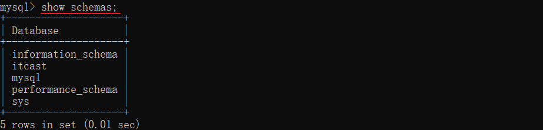

an example to get you started
MySQL操作 #
SQL通用语法
1、SQL语句可以单行或多行书写，以分号结尾。
2、SQL语句可以使用空格/缩进来增强语句的可读性。
3、MySQL数据库的SQL语句不区分大小写。
4、注释：
- 单行注释：– 注释内容 或 # 注释内容(MySQL特有)
- 多行注释： /* 注释内容 */
以上就是SQL语句的通用语法，这些通用语法大家目前先有一个直观的认识，我们后面在讲解每一类SQL语句的时候，还会再来强调通用语法。
1.1 数据库操作 #
我们在进行数据库设计，需要使用到刚才所介绍SQL分类中的DDL语句。
DDL英文全称是Data Definition Language(数据定义语言)，用来定义数据库对象(数据库、表)。
DDL中数据库的常见操作：查询、创建、使用、删除。
1.1.1 查询数据库 #
查询所有数据库：
show databases;
命令行中执行效果如下：
查询当前数据库：
select database();
命令行中执行效果如果：
我们要操作某一个数据库，必须要切换到对应的数据库中。
通过指令：select database() ，就可以查询到当前所处的数据库
1.1.2 创建数据库 #
语法：
create database [ if not exists ] 数据库名;
案例： 创建一个itcast数据库。
create database itcast;
命令行执行效果如下：
注意：在同一个数据库服务器中，不能创建两个名称相同的数据库，否则将会报错。
- 可以使用if not exists来避免这个问题
-- 数据库不存在,则创建该数据库；如果存在则不创建
create database if not extists itcast;
命令行执行效果如下：
1.1.3 使用数据库 #
语法：
use 数据库名 ;
我们要操作某一个数据库下的表时，就需要通过该指令，切换到对应的数据库下，否则不能操作。
案例：切换到itcast数据
use itcast;
命令执行效果如下：
1.1.4 删除数据库 #
语法：
drop database [ if exists ] 数据库名 ;
如果删除一个不存在的数据库，将会报错。
可以加上参数 if exists ，如果数据库存在，再执行删除，否则不执行删除。
案例：删除itcast数据库
drop database if exists itcast; -- itcast数据库存在时删除
命令执行效果如下：
说明：上述语法中的database，也可以替换成 schema
- 如：create schema db01;
- 如：show schemas;

1.2 使用 #
1.2.1 连接数据库 #
1、打开IDEA自带的Database
2、配置MySQL
3、输入相关信息
4、下载MySQL连接驱动
5、测试数据库连接
6、保存配置
默认情况下，连接上了MySQL数据库之后， 数据库并没有全部展示出来。 需要选择要展示哪些数据库。具体操作如下：
1.2.2 操作数据库 #
建数据库：**

有了图形化界面工具后，就可以方便的使用图形化工具：创建数据库，创建表、修改表等DDL操作。
其实工具底层也是通过DDL语句操作的数据库，只不过这些SQL语句是图形化界面工具帮我们自动完成的。
查看所有数据库：
1.3 表操作 #
学习完了DDL语句当中关于数据库的操作之后，接下来我们继续学习DDL语句当中关于表结构的操作。
关于表结构的操作也是包含四个部分：创建表、查询表、修改表、删除表。
1.3.1 创建 #
1.3.1 创建 #
1.3.1.1 语法 #
create table 表名(
字段1 字段1类型 [约束] [comment 字段1注释 ],
字段2 字段2类型 [约束] [comment 字段2注释 ],
......
字段n 字段n类型 [约束] [comment 字段n注释 ]
) [ comment 表注释 ] ;
注意： [ ] 中的内容为可选参数； 最后一个字段后面没有逗号
案例：创建tb_user表
- 对应的结构如下：

- 建表语句：
create table tb_user (
id int comment 'ID,唯一标识', # id是一行数据的唯一标识（不能重复）
username varchar(20) comment '用户名',
name varchar(10) comment '姓名',
age int comment '年龄',
gender char(1) comment '性别'
) comment '用户表';
数据表创建完成，接下来我们还需要测试一下是否可以往这张表结构当中来存储数据。
双击打开tb_user表结构，大家会发现里面没有数据：
添加数据：
此时我们再插入一条数据：
我们之前提到过：id字段是一行数据的唯一标识，不能有重复值。但是现在数据表中有两个相同的id值，这是为什么呢？
- 其实我们现在创建表结构的时候， id这个字段我们只加了一个备注信息说明它是一个唯一标识，但是在数据库层面呢，并没有去限制字段存储的数据。所以id这个字段没有起到唯一标识的作用。
想要限制字段所存储的数据，就需要用到数据库中的约束。
1.3.1.2 约束 #
概念：所谓约束就是作用在表中字段上的规则，用于限制存储在表中的数据。
作用：就是来保证数据库当中数据的正确性、有效性和完整性。（后面的学习会验证这些）
在MySQL数据库当中，提供了以下5种约束：
| 约束 | 描述 | 关键字 |
|---|---|---|
| 非空约束 | 限制该字段值不能为null | not null |
| 唯一约束 | 保证字段的所有数据都是唯一、不重复的 | unique |
| 主键约束 | 主键是一行数据的唯一标识，要求非空且唯一 | primary key |
| 默认约束 | 保存数据时，如果未指定该字段值，则采用默认值 | default |
| 外键约束 | 让两张表的数据建立连接，保证数据的一致性和完整性 | foreign key |
注意：约束是作用于表中字段上的，可以在创建表/修改表的时候添加约束。
案例：创建tb_user表
- 对应的结构如下：
在上述的表结构中:
id 是一行数据的唯一标识
username 用户名字段是非空且唯一的
name 姓名字段是不允许存储空值的
gender 性别字段是有默认值，默认为男
- 建表语句：
create table tb_user (
id int primary key comment 'ID,唯一标识',
username varchar(20) not null unique comment '用户名',
name varchar(10) not null comment '姓名',
age int comment '年龄',
gender char(1) default '男' comment '性别'
) comment '用户表';
数据表创建完成，接下来测试一下表中字段上的约束是否生效
大家有没有发现一个问题：id字段下存储的值，如果由我们自己来维护会比较麻烦(必须保证值的唯一性)。MySQL数据库为了解决这个问题，给我们提供了一个关键字：auto_increment（自动增长）
主键自增：auto_increment
- 每次插入新的行记录时，数据库自动生成id字段(主键)下的值
- 具有auto_increment的数据列是一个正数序列开始增长(从1开始自增)
create table tb_user (
id int primary key auto_increment comment 'ID,唯一标识', #主键自动增长
username varchar(20) not null unique comment '用户名',
name varchar(10) not null comment '姓名',
age int comment '年龄',
gender char(1) default '男' comment '性别'
) comment '用户表';
测试：主键自增
1.3.1.3 数据类型 #
在上面建表语句中，我们在指定字段的数据类型时，用到了int 、varchar、char，那么在MySQL中除了以上的数据类型，还有哪些常见的数据类型呢？ 接下来,我们就来详细介绍一下MySQL的数据类型。
MySQL中的数据类型有很多，主要分为三类：数值类型、字符串类型、日期时间类型。
数值类型
| 类型 | 大小 | 有符号(SIGNED)范围 | 无符号(UNSIGNED)范围 | 描述 |
|---|---|---|---|---|
| TINYINT | 1byte | (-128，127) | (0，255) | 小整数值 |
| SMALLINT | 2bytes | (-32768，32767) | (0，65535) | 大整数值 |
| MEDIUMINT | 3bytes | (-8388608，8388607) | (0，16777215) | 大整数值 |
| INT/INTEGER | 4bytes | (-2147483648，2147483647) | (0，4294967295) | 大整数值 |
| BIGINT | 8bytes | (-2^63，2^63-1) | (0，2^64-1) | 极大整数值 |
| FLOAT | 4bytes | (-3.402823466 E+38，3.402823466351 E+38) | 0 和 (1.175494351 E-38，3.402823466 E+38) | 单精度浮点数值 |
| DOUBLE | 8bytes | (-1.7976931348623157 E+308，1.7976931348623157 E+308) | 0 和 (2.2250738585072014 E-308，1.7976931348623157 E+308) | 双精度浮点数值 |
| DECIMAL | 依赖于M(精度)和D(标度)的值 | 依赖于M(精度)和D(标度)的值 | 小数值(精确定点数) |
示例:
年龄字段 ---不会出现负数, 而且人的年龄不会太大
age tinyint unsigned
分数 ---总分100分, 最多出现一位小数
score double(4,1)
字符串类型
| 类型 | 大小 | 描述 |
|---|---|---|
| CHAR | 0-255 bytes | 定长字符串(需要指定长度) |
| VARCHAR | 0-65535 bytes | 变长字符串(需要指定长度) |
| TINYBLOB | 0-255 bytes | 不超过255个字符的二进制数据 |
| TINYTEXT | 0-255 bytes | 短文本字符串 |
| BLOB | 0-65 535 bytes | 二进制形式的长文本数据 |
| TEXT | 0-65 535 bytes | 长文本数据 |
| MEDIUMBLOB | 0-16 777 215 bytes | 二进制形式的中等长度文本数据 |
| MEDIUMTEXT | 0-16 777 215 bytes | 中等长度文本数据 |
| LONGBLOB | 0-4 294 967 295 bytes | 二进制形式的极大文本数据 |
| LONGTEXT | 0-4 294 967 295 bytes | 极大文本数据 |
char 与 varchar 都可以描述字符串，char是定长字符串，指定长度多长，就占用多少个字符，和字段值的长度无关 。而varchar是变长字符串，指定的长度为最大占用长度 。相对来说，char的性能会更高些。
示例：
用户名 username ---长度不定, 最长不会超过50
username varchar(50)
手机号 phone ---固定长度为11
phone char(11)
日期时间类型
| 类型 | 大小 | 范围 | 格式 | 描述 |
|---|---|---|---|---|
| DATE | 3 | 1000-01-01 至 9999-12-31 | YYYY-MM-DD | 日期值 |
| TIME | 3 | -838:59:59 至 838:59:59 | HH:MM:SS | 时间值或持续时间 |
| YEAR | 1 | 1901 至 2155 | YYYY | 年份值 |
| DATETIME | 8 | 1000-01-01 00:00:00 至 9999-12-31 23:59:59 | YYYY-MM-DD HH:MM:SS | 混合日期和时间值 |
| TIMESTAMP | 4 | 1970-01-01 00:00:01 至 2038-01-19 03:14:07 | YYYY-MM-DD HH:MM:SS | 混合日期和时间值，时间戳 |
示例:
生日字段 birthday ---生日只需要年月日
birthday date
创建时间 createtime --- 需要精确到时分秒
createtime datetime
1.3.2 查询 #
关于表结构的查询操作，工作中一般都是直接基于图形化界面操作。
查询当前数据库所有表
show tables;
查看指定表结构
desc 表名 ;#可以查看指定表的字段、字段的类型、是否可以为NULL、是否存在默认值等信息
查询指定表的建表语句
show create table 表名 ;
1.3.3 修改 #
关于表结构的修改操作，工作中一般都是直接基于图形化界面操作。
添加字段
alter table 表名 add 字段名 类型(长度) [comment 注释] [约束];
案例： 为tb_emp表添加字段qq，字段类型为 varchar(11)
alter table tb_emp add qq varchar(11) comment 'QQ号码';
图形化操作：添加字段
修改数据类型
alter table 表名 modify 字段名 新数据类型(长度);
alter table 表名 change 旧字段名 新字段名 类型(长度) [comment 注释] [约束];
案例：修改qq字段的字段类型，将其长度由11修改为13
alter table tb_emp modify qq varchar(13) comment 'QQ号码';
案例：修改qq字段名为 qq_num，字段类型varchar(13)
alter table tb_emp change qq qq_num varchar(13) comment 'QQ号码';
图形化操作：修改数据类型和字段名
删除字段
alter table 表名 drop 字段名;
案例：删除tb_emp表中的qq_num字段
alter table tb_emp drop qq_num;
图形化操作：删除字段
修改表名
rename table 表名 to 新表名;
案例：将当前的tb_emp表的表名修改为emp
rename table tb_emp to emp;
图形化操作：修改表名
1.3.4 删除 #
关于表结构的删除操作，工作中一般都是直接基于图形化界面操作。
删除表语法：
drop table [ if exists ] 表名;
if exists ：只有表名存在时才会删除该表，表名不存在，则不执行删除操作(如果不加该参数项，删除一张不存在的表，执行将会报错)。
案例：如果tb_emp表存在，则删除tb_emp表
drop table if exists tb_emp; -- 在删除表时，表中的全部数据也会被删除。
图形化操作：删除表
1.4 数据库操作-DML #
DML英文全称是Data Manipulation Language(数据操作语言)，用来对数据库中表的数据记录进行增、删、改操作。
- 添加数据（INSERT）
- 修改数据（UPDATE）
- 删除数据（DELETE）
1.4.1 增加(insert) #
insert语法：
-
向指定字段添加数据
insert into 表名 (字段名1, 字段名2) values (值1, 值2); -
全部字段添加数据
insert into 表名 values (值1, 值2, ...); -
批量添加数据（指定字段）
insert into 表名 (字段名1, 字段名2) values (值1, 值2), (值1, 值2); -
批量添加数据（全部字段）
insert into 表名 values (值1, 值2, ...), (值1, 值2, ...);
案例1：向tb_emp表的username、name、gender字段插入数据
-- 因为设计表时create_time, update_time两个字段不能为NULL，所以也做为要插入的字段
insert into tb_emp(username, name, gender, create_time, update_time)
values ('wuji', '张无忌', 1, now(), now());
案例2：向tb_emp表的所有字段插入数据
insert into tb_emp(id, username, password, name, gender, image, job, entrydate, create_time, update_time)
values (null, 'zhirou', '123', '周芷若', 2, '1.jpg', 1, '2010-01-01', now(), now());
案例3：批量向tb_emp表的username、name、gender字段插入数据
insert into tb_emp(username, name, gender, create_time, update_time)
values ('weifuwang', '韦一笑', 1, now(), now()),
('fengzi', '张三疯', 1, now(), now());
图形化操作：双击tb_emp表查看数据
Insert操作的注意事项：
-
插入数据时，指定的字段顺序需要与值的顺序是一一对应的。
-
字符串和日期型数据应该包含在引号中。
-
插入的数据大小，应该在字段的规定范围内。
1.4.2 修改(update) #
update语法：
update 表名 set 字段名1 = 值1 , 字段名2 = 值2 , .... [where 条件] ;
案例1：将tb_emp表中id为1的员工，姓名name字段更新为’张三'
update tb_emp set name='张三',update_time=now() where id=1;
案例2：将tb_emp表的所有员工入职日期更新为'2010-01-01'
update tb_emp set entrydate='2010-01-01',update_time=now();
注意事项:
修改语句的条件可以有，也可以没有，如果没有条件，则会修改整张表的所有数据。
在修改数据时，一般需要同时修改公共字段update_time，将其修改为当前操作时间。
1.4.3 删除(delete) #
delete语法：
delete from 表名 [where 条件] ;
案例1：删除tb_emp表中id为1的员工
delete from tb_emp where id = 1;
案例2：删除tb_emp表中所有员工
delete from tb_emp;
注意事项:
• DELETE 语句的条件可以有，也可以没有，如果没有条件，则会删除整张表的所有数据。
• DELETE 语句不能删除某一个字段的值(可以使用UPDATE，将该字段值置为NULL即可)。
• 当进行删除全部数据操作时，会提示询问是否确认删除所有数据，直接点击Execute即可。
1.5 数据库操作-DQL #
1.5.1 介绍 #
DQL英文全称是Data Query Language(数据查询语言)，用来查询数据库表中的记录。
查询关键字：SELECT
查询操作是所有SQL语句当中最为常见，也是最为重要的操作。在一个正常的业务系统中，查询操作的使用频次是要远高于增删改操作的。当我们打开某个网站或APP所看到的展示信息，都是通过从数据库中查询得到的，而在这个查询过程中，还会涉及到条件、排序、分页等操作。

1.5.2 语法 #
DQL查询语句，语法结构如下：
SELECT
字段列表
FROM
表名列表
WHERE
条件列表
GROUP BY
分组字段列表
HAVING
分组后条件列表
ORDER BY
排序字段列表
LIMIT
分页参数
1.5.3 基本查询 #
在基本查询的DQL语句中，不带任何的查询条件，语法如下：
-
查询多个字段
select 字段1, 字段2, 字段3 from 表名; -
查询所有字段（通配符）
select * from 表名; -
设置别名
select 字段1 [ as 别名1 ] , 字段2 [ as 别名2 ] from 表名; -
去除重复记录
select distinct 字段列表 from 表名;
案例1：查询指定字段 name，entrydate并返回
select name,entrydate from tb_emp;
案例2：查询返回所有字段
select * from tb_emp;
*号代表查询所有字段，在实际开发中尽量少用（不直观、影响效率）
案例3：查询所有员工的 name,entrydate，并起别名(姓名、入职日期)
-- 方式1：
select name AS 姓名, entrydate AS 入职日期 from tb_emp;
-- 方式2： 别名中有特殊字符时，使用''或""包含
select name AS '姓 名', entrydate AS '入职日期' from tb_emp;
-- 方式3：
select name AS "姓名", entrydate AS "入职日期" from tb_emp;
案例4：查询已有的员工关联了哪几种职位(不要重复)
select distinct job from tb_emp;
1.5.4 条件查询 #
语法：
select 字段列表 from 表名 where 条件列表 ; -- 条件列表：意味着可以有多个条件
学习条件查询就是学习条件的构建方式，而在SQL语句当中构造条件的运算符分为两类：
- 比较运算符
- 逻辑运算符
常用的比较运算符如下:
| 比较运算符 | 功能 |
|---|---|
| > | 大于 |
| >= | 大于等于 |
| < | 小于 |
| <= | 小于等于 |
| = | 等于 |
| <> 或 != | 不等于 |
| between … and … | 在某个范围之内(含最小、最大值) |
| in(…) | 在in之后的列表中的值，多选一 |
| like 占位符 | 模糊匹配(_匹配单个字符, %匹配任意个字符) |
| is null | 是null |
常用的逻辑运算符如下:
| 逻辑运算符 | 功能 |
|---|---|
| and 或 && | 并且 (多个条件同时成立) |
| or 或 || | 或者 (多个条件任意一个成立) |
| not 或 ! | 非 , 不是 |
案例1：查询 姓名 为 杨逍 的员工
select id, username, password, name, gender, image, job, entrydate, create_time, update_time
from tb_emp
where name = '杨逍'; -- 字符串使用''或""包含
案例2：查询 id小于等于5 的员工信息
select id, username, password, name, gender, image, job, entrydate, create_time, update_time
from tb_emp
where id <=5;
案例3：查询 没有分配职位 的员工信息
select id, username, password, name, gender, image, job, entrydate, create_time, update_time
from tb_emp
where job is null ;
注意：查询为NULL的数据时，不能使用
= null
案例4：查询 有职位 的员工信息
select id, username, password, name, gender, image, job, entrydate, create_time, update_time
from tb_emp
where job is not null ;
案例5：查询 密码不等于 ‘123456’ 的员工信息
-- 方式1：
select id, username, password, name, gender, image, job, entrydate, create_time, update_time
from tb_emp
where password <> '123456';
-- 方式2：
select id, username, password, name, gender, image, job, entrydate, create_time, update_time
from tb_emp
where password != '123456';
案例6：查询 入职日期 在 ‘2000-01-01’ (包含) 到 ‘2010-01-01’(包含) 之间的员工信息
-- 方式1：
select id, username, password, name, gender, image, job, entrydate, create_time, update_time
from tb_emp
where entrydate>='2000-01-01' and entrydate<='2010-01-01';
-- 方式2： between...and
select id, username, password, name, gender, image, job, entrydate, create_time, update_time
from tb_emp
where entrydate between '2000-01-01' and '2010-01-01';
案例7：查询 入职时间 在 ‘2000-01-01’ (包含) 到 ‘2010-01-01’(包含) 之间 且 性别为女 的员工信息
select id, username, password, name, gender, image, job, entrydate, create_time, update_time
from tb_emp
where entrydate between '2000-01-01' and '2010-01-01'
and gender = 2;
案例8：查询 职位是 2 (讲师), 3 (学工主管), 4 (教研主管) 的员工信息
-- 方式1：使用or连接多个条件
select id, username, password, name, gender, image, job, entrydate, create_time, update_time
from tb_emp
where job=2 or job=3 or job=4;
-- 方式2：in关键字
select id, username, password, name, gender, image, job, entrydate, create_time, update_time
from tb_emp
where job in (2,3,4);
案例9：查询 姓名 为两个字的员工信息
select id, username, password, name, gender, image, job, entrydate, create_time, update_time
from tb_emp
where name like '__'; # 通配符 "_" 代表任意1个字符
案例10：查询 姓 ‘张’ 的员工信息
select id, username, password, name, gender, image, job, entrydate, create_time, update_time
from tb_emp
where name like '张%'; # 通配符 "%" 代表任意个字符（0个 ~ 多个）
1.5.5 聚合函数 #
之前我们做的查询都是横向查询，就是根据条件一行一行的进行判断，而使用聚合函数查询就是纵向查询，它是对一列的值进行计算，然后返回一个结果值。（将一列数据作为一个整体，进行纵向计算）
语法：
select 聚合函数(字段列表) from 表名 ;
注意 : 聚合函数会忽略空值，对NULL值不作为统计。
常用聚合函数：
| 函数 | 功能 |
|---|---|
| count | 统计数量 |
| max | 最大值 |
| min | 最小值 |
| avg | 平均值 |
| sum | 求和 |
count ：按照列去统计有多少行数据。
- 在根据指定的列统计的时候，如果这一列中有null的行，该行不会被统计在其中。
sum ：计算指定列的数值和，如果不是数值类型，那么计算结果为0
max ：计算指定列的最大值
min ：计算指定列的最小值
avg ：计算指定列的平均值
案例1：统计该企业员工数量
# count(字段)
select count(id) from tb_emp;-- 结果：29
select count(job) from tb_emp;-- 结果：28 （聚合函数对NULL值不做计算）
# count(常量)
select count(0) from tb_emp;
select count('A') from tb_emp;
# count(*) 推荐此写法（MySQL底层进行了优化）
select count(*) from tb_emp;
案例2：统计该企业最早入职的员工
select min(entrydate) from tb_emp;
案例3：统计该企业最迟入职的员工
select max(entrydate) from tb_emp;
案例4：统计该企业员工 ID 的平均值
select avg(id) from tb_emp;
案例5：统计该企业员工的 ID 之和
select sum(id) from tb_emp;
1.5.6 分组查询 #
分组： 按照某一列或者某几列，把相同的数据进行合并输出。
分组其实就是按列进行分类(指定列下相同的数据归为一类)，然后可以对分类完的数据进行合并计算。
分组查询通常会使用聚合函数进行计算。
语法：
select 字段列表 from 表名 [where 条件] group by 分组字段名 [having 分组后过滤条件];
案例1：根据性别分组 , 统计男性和女性员工的数量
select gender, count(*)
from tb_emp
group by gender; -- 按照gender字段进行分组（gender字段下相同的数据归为一组）

案例2：查询入职时间在 ‘2015-01-01’ (包含) 以前的员工 , 并对结果根据职位分组 , 获取员工数量大于等于2的职位
select job, count(*)
from tb_emp
where entrydate <= '2015-01-01' -- 分组前条件
group by job -- 按照job字段分组
having count(*) >= 2; -- 分组后条件
注意事项:
• 分组之后，查询的字段一般为聚合函数和分组字段，查询其他字段无任何意义
• 执行顺序：where > 聚合函数 > having
where与having区别（面试题）
- 执行时机不同：where是分组之前进行过滤，不满足where条件，不参与分组；而having是分组之后对结果进行过滤。
- 判断条件不同：where不能对聚合函数进行判断，而having可以。
1.5.7 排序查询 #
排序在日常开发中是非常常见的一个操作，有升序排序，也有降序排序。
语法：
select 字段列表
from 表名
[where 条件列表]
[group by 分组字段 ]
order by 字段1 排序方式1 , 字段2 排序方式2 … ;
-
排序方式：
-
ASC ：升序（默认值）
-
DESC：降序
-
案例1：根据入职时间, 对员工进行升序排序
select id, username, password, name, gender, image, job, entrydate, create_time, update_time
from tb_emp
order by entrydate ASC; -- 按照entrydate字段下的数据进行升序排序
select id, username, password, name, gender, image, job, entrydate, create_time, update_time
from tb_emp
order by entrydate; -- 默认就是ASC（升序）
注意事项：如果是升序, 可以不指定排序方式ASC
案例2：根据入职时间，对员工进行降序排序
select id, username, password, name, gender, image, job, entrydate, create_time, update_time
from tb_emp
order by entrydate DESC; -- 按照entrydate字段下的数据进行降序排序
案例3：根据入职时间对公司的员工进行升序排序，入职时间相同，再按照更新时间进行降序排序
select id, username, password, name, gender, image, job, entrydate, create_time, update_time
from tb_emp
order by entrydate ASC , update_time DESC;
注意事项：如果是多字段排序，当第一个字段值相同时，才会根据第二个字段进行排序
1.5.8 分页查询 #
分页操作在业务系统开发时，也是非常常见的一个功能，日常我们在网站中看到的各种各样的分页条，后台也都需要借助于数据库的分页操作。
分页查询语法：
select 字段列表 from 表名 limit 起始索引, 查询记录数 ;
案例1：从起始索引0开始查询员工数据, 每页展示5条记录
select id, username, password, name, gender, image, job, entrydate, create_time, update_time
from tb_emp
limit 0 , 5; -- 从索引0开始，向后取5条记录
案例2：查询 第1页 员工数据, 每页展示5条记录
select id, username, password, name, gender, image, job, entrydate, create_time, update_time
from tb_emp
limit 5; -- 如果查询的是第1页数据，起始索引可以省略，直接简写为：limit 条数
案例3：查询 第2页 员工数据, 每页展示5条记录
select id, username, password, name, gender, image, job, entrydate, create_time, update_time
from tb_emp
limit 5 , 5; -- 从索引5开始，向后取5条记录
案例4：查询 第3页 员工数据, 每页展示5条记录
select id, username, password, name, gender, image, job, entrydate, create_time, update_time
from tb_emp
limit 10 , 5; -- 从索引10开始，向后取5条记录
注意事项:
起始索引从0开始。 计算公式 ： 起始索引 = （查询页码 - 1）* 每页显示记录数
分页查询是数据库的方言，不同的数据库有不同的实现，MySQL中是LIMIT
如果查询的是第一页数据，起始索引可以省略，直接简写为 limit 条数
1.5.9 回表查询 #
回表查询是指通过二级索引找到对应的主键值，然后再通过主键值查询聚簇索引中对应的整行数据的过程。
1.6 多表设计 #
关于单表的操作(单表的设计、单表的增删改查)我们就已经学习完了。接下来我们就要来学习多表的操作，首先来学习多表的设计。
项目开发中，在进行数据库表结构设计时，会根据业务需求及业务模块之间的关系，分析并设计表结构，由于业务之间相互关联，所以各个表结构之间也存在着各种联系，基本上分为三种：
-
一对多(多对一)
-
多对多
-
一对一
1.6.1 一对多 #
1.6.1.1 表设计 #
需求：根据页面原型及需求文档 ，完成部门及员工的表结构设计
- 员工管理页面原型：（前面已完成tb_emp表结构设计）
-
- 部门管理页面原型：
-
经过上述分析，现已明确的部门表结构：
- 业务字段 ： 部门名称
- 基础字段 ： id(主键)、创建时间、修改时间
部门表 - SQL语句：
# 建议：创建新的数据库（多表设计存放在新数据库下）
create database db03;
use db03;
-- 部门表
create table tb_dept
(
id int unsigned primary key auto_increment comment '主键ID',
name varchar(10) not null unique comment '部门名称',
create_time datetime not null comment '创建时间',
update_time datetime not null comment '修改时间'
) comment '部门表';
部门表创建好之后，我们还需要再修改下员工表。为什么要修改员工表呢？是因为我们之前设计员工表(单表)的时候，并没有考虑员工的归属部门。
员工表：添加归属部门字段
-- 员工表
create table tb_emp
(
id int unsigned primary key auto_increment comment 'ID',
username varchar(20) not null unique comment '用户名',
password varchar(32) default '123456' comment '密码',
name varchar(10) not null comment '姓名',
gender tinyint unsigned not null comment '性别, 说明: 1 男, 2 女',
image varchar(300) comment '图像',
job tinyint unsigned comment '职位, 说明: 1 班主任,2 讲师, 3 学工主管, 4 教研主管',
entrydate date comment '入职时间',
dept_id int unsigned comment '部门ID', -- 员工的归属部门
create_time datetime not null comment '创建时间',
update_time datetime not null comment '修改时间'
) comment '员工表';
测试数据：
-- 部门表测试数据
insert into tb_dept (id, name, create_time, update_time) values
(1,'学工部',now(),now()),
(2,'教研部',now(),now()),
(3,'咨询部',now(),now()),
(4,'就业部',now(),now()),
(5,'人事部',now(),now());
-- 员工表测试数据
INSERT INTO tb_emp
(id, username, password, name, gender, image, job, entrydate,dept_id, create_time, update_time) VALUES
(1,'jinyong','123456','金庸',1,'1.jpg',4,'2000-01-01',2,now(),now()),
(2,'zhangwuji','123456','张无忌',1,'2.jpg',2,'2015-01-01',2,now(),now()),
(3,'yangxiao','123456','杨逍',1,'3.jpg',2,'2008-05-01',2,now(),now()),
(4,'weiyixiao','123456','韦一笑',1,'4.jpg',2,'2007-01-01',2,now(),now()),
(5,'changyuchun','123456','常遇春',1,'5.jpg',2,'2012-12-05',2,now(),now()),
(6,'xiaozhao','123456','小昭',2,'6.jpg',3,'2013-09-05',1,now(),now()),
(7,'jixiaofu','123456','纪晓芙',2,'7.jpg',1,'2005-08-01',1,now(),now()),
(8,'zhouzhiruo','123456','周芷若',2,'8.jpg',1,'2014-11-09',1,now(),now()),
(9,'dingminjun','123456','丁敏君',2,'9.jpg',1,'2011-03-11',1,now(),now()),
(10,'zhaomin','123456','赵敏',2,'10.jpg',1,'2013-09-05',1,now(),now()),
(11,'luzhangke','123456','鹿杖客',1,'11.jpg',1,'2007-02-01',1,now(),now()),
(12,'hebiweng','123456','鹤笔翁',1,'12.jpg',1,'2008-08-18',1,now(),now()),
(13,'fangdongbai','123456','方东白',1,'13.jpg',2,'2012-11-01',2,now(),now()),
(14,'zhangsanfeng','123456','张三丰',1,'14.jpg',2,'2002-08-01',2,now(),now()),
(15,'yulianzhou','123456','俞莲舟',1,'15.jpg',2,'2011-05-01',2,now(),now()),
(16,'songyuanqiao','123456','宋远桥',1,'16.jpg',2,'2010-01-01',2,now(),now()),
(17,'chenyouliang','123456','陈友谅',1,'17.jpg',NULL,'2015-03-21',NULL,now(),now());
员工表 - 部门表之间的关系：
一对多关系实现：在数据库表中多的一方，添加字段，来关联属于一这方的主键。
1.6.1.2 外键约束 #
问题
-
表结构创建完毕后，我们看到两张表的数据分别为：
现在员工表中有五个员工都归属于1号部门(学工部)，当删除了1号部门后，数据变为：
1号部门被删除了，但是依然还有5个员工是属于1号部门的。 此时：就出现数据的不完整、不一致了。
问题分析
目前上述的两张表(员工表、部门表)，在数据库层面，并未建立关联，所以是无法保证数据的一致性和完整性的
问题解决
想解决上述的问题呢，我们就可以通过数据库中的 外键约束 来解决。
外键约束：让两张表的数据建立连接，保证数据的一致性和完整性。
对应的关键字：foreign key
外键约束的语法：
-- 创建表时指定
create table 表名(
字段名 数据类型,
...
[constraint] [外键名称] foreign key (外键字段名) references 主表 (主表列名)
);
-- 建完表后，添加外键
alter table 表名 add constraint 外键名称 foreign key(外键字段名) references 主表(主表列名);
那接下来，我们就为员工表的dept_id 建立外键约束，来关联部门表的主键。
方式1：通过SQL语句操作
-- 修改表： 添加外键约束
alter table tb_emp
add constraint fk_dept_id foreign key (dept_id) references tb_dept(id);
方式2：图形化界面操作
当我们添加外键约束时，我们得保证当前数据库表中的数据是完整的。 所以，我们需要将之前删除掉的数据再添加回来。
当我们添加了外键之后，再删除ID为1的部门，就会发现，此时数据库报错了，不允许删除。
外键约束（foreign key）：保证了数据的完整性和一致性。
物理外键和逻辑外键
-
物理外键
- 概念：使用foreign key定义外键关联另外一张表。
- 缺点：
- 影响增、删、改的效率（需要检查外键关系）。
- 仅用于单节点数据库，不适用与分布式、集群场景。
- 容易引发数据库的死锁问题，消耗性能。
-
逻辑外键
- 概念：在业务层逻辑中，解决外键关联。
- 通过逻辑外键，就可以很方便的解决上述问题。
**在现在的企业开发中，很少会使用物理外键，都是使用逻辑外键。 甚至在一些数据库开发规范中，会明确指出禁止使用物理外键 foreign key **
1.6.2 一对一 #
一对一关系表在实际开发中应用起来比较简单，通常是用来做单表的拆分，也就是将一张大表拆分成两张小表，将大表中的一些基础字段放在一张表当中，将其他的字段放在另外一张表当中，以此来提高数据的操作效率。
一对一的应用场景： 用户表(基本信息+身份信息)
- 基本信息：用户的ID、姓名、性别、手机号、学历
- 身份信息：民族、生日、身份证号、身份证签发机关，身份证的有效期(开始时间、结束时间)
如果在业务系统当中，对用户的基本信息查询频率特别的高，但是对于用户的身份信息查询频率很低，此时出于提高查询效率的考虑，我就可以将这张大表拆分成两张小表，第一张表存放的是用户的基本信息，而第二张表存放的就是用户的身份信息。他们两者之间一对一的关系，一个用户只能对应一个身份证，而一个身份证也只能关联一个用户。
那么在数据库层面怎么去体现上述两者之间是一对一的关系呢？
其实一对一我们可以看成一种特殊的一对多。一对多我们是怎么设计表关系的？是不是在多的一方添加外键。同样我们也可以通过外键来体现一对一之间的关系，我们只需要在任意一方来添加一个外键就可以了。

一对一 ：在任意一方加入外键，关联另外一方的主键，并且设置外键为唯一的(UNIQUE)
SQL脚本：
-- 用户基本信息表
create table tb_user(
id int unsigned primary key auto_increment comment 'ID',
name varchar(10) not null comment '姓名',
gender tinyint unsigned not null comment '性别, 1 男 2 女',
phone char(11) comment '手机号',
degree varchar(10) comment '学历'
) comment '用户基本信息表';
-- 测试数据
insert into tb_user values (1,'白眉鹰王',1,'18812340001','初中'),
(2,'青翼蝠王',1,'18812340002','大专'),
(3,'金毛狮王',1,'18812340003','初中'),
(4,'紫衫龙王',2,'18812340004','硕士');
-- 用户身份信息表
create table tb_user_card(
id int unsigned primary key auto_increment comment 'ID',
nationality varchar(10) not null comment '民族',
birthday date not null comment '生日',
idcard char(18) not null comment '身份证号',
issued varchar(20) not null comment '签发机关',
expire_begin date not null comment '有效期限-开始',
expire_end date comment '有效期限-结束',
user_id int unsigned not null unique comment '用户ID',
constraint fk_user_id foreign key (user_id) references tb_user(id)
) comment '用户身份信息表';
-- 测试数据
insert into tb_user_card values (1,'汉','1960-11-06','100000100000100001','朝阳区公安局','2000-06-10',null,1),
(2,'汉','1971-11-06','100000100000100002','静安区公安局','2005-06-10','2025-06-10',2),
(3,'汉','1963-11-06','100000100000100003','昌平区公安局','2006-06-10',null,3),
(4,'回','1980-11-06','100000100000100004','海淀区公安局','2008-06-10','2028-06-10',4);
1.6.3 多对多 #
多对多的关系在开发中属于也比较常见的。比如：学生和老师的关系，一个学生可以有多个授课老师，一个授课老师也可以有多个学生。在比如：学生和课程的关系，一个学生可以选修多门课程，一个课程也可以供多个学生选修。
案例：学生与课程的关系
-
关系：一个学生可以选修多门课程，一门课程也可以供多个学生选择
-
实现关系：建立第三张中间表，中间表至少包含两个外键，分别关联两方主键
SQL脚本：
-- 学生表
create table tb_student(
id int auto_increment primary key comment '主键ID',
name varchar(10) comment '姓名',
no varchar(10) comment '学号'
) comment '学生表';
-- 学生表测试数据
insert into tb_student(name, no) values ('黛绮丝', '2000100101'),('谢逊', '2000100102'),('殷天正', '2000100103'),('韦一笑', '2000100104');
-- 课程表
create table tb_course(
id int auto_increment primary key comment '主键ID',
name varchar(10) comment '课程名称'
) comment '课程表';
-- 课程表测试数据
insert into tb_course (name) values ('Java'), ('PHP'), ('MySQL') , ('Hadoop');
-- 学生课程表（中间表）
create table tb_student_course(
id int auto_increment comment '主键' primary key,
student_id int not null comment '学生ID',
course_id int not null comment '课程ID',
constraint fk_courseid foreign key (course_id) references tb_course (id),
constraint fk_studentid foreign key (student_id) references tb_student (id)
)comment '学生课程中间表';
-- 学生课程表测试数据
insert into tb_student_course(student_id, course_id) values (1,1),(1,2),(1,3),(2,2),(2,3),(3,4);
多表查询 #
2.1 概述 #
2.1.1 数据准备 #
SQL脚本：
#建议：创建新的数据库
create database db04;
use db04;
-- 部门表
create table tb_dept
(
id int unsigned primary key auto_increment comment '主键ID',
name varchar(10) not null unique comment '部门名称',
create_time datetime not null comment '创建时间',
update_time datetime not null comment '修改时间'
) comment '部门表';
-- 部门表测试
insert into tb_dept (id, name, create_time, update_time)
values (1, '学工部', now(), now()),
(2, '教研部', now(), now()),
(3, '咨询部', now(), now()),
(4, '就业部', now(), now()),
(5, '人事部', now(), now());
-- 员工表
create table tb_emp
(
id int unsigned primary key auto_increment comment 'ID',
username varchar(20) not null unique comment '用户名',
password varchar(32) default '123456' comment '密码',
name varchar(10) not null comment '姓名',
gender tinyint unsigned not null comment '性别, 说明: 1 男, 2 女',
image varchar(300) comment '图像',
job tinyint unsigned comment '职位, 说明: 1 班主任,2 讲师, 3 学工主管, 4 教研主管, 5 咨询师',
entrydate date comment '入职时间',
dept_id int unsigned comment '部门ID',
create_time datetime not null comment '创建时间',
update_time datetime not null comment '修改时间'
) comment '员工表';
-- 员工表测试数据
INSERT INTO tb_emp(id, username, password, name, gender, image, job, entrydate,dept_id, create_time, update_time)
VALUES
(1,'jinyong','123456','金庸',1,'1.jpg',4,'2000-01-01',2,now(),now()),
(2,'zhangwuji','123456','张无忌',1,'2.jpg',2,'2015-01-01',2,now(),now()),
(3,'yangxiao','123456','杨逍',1,'3.jpg',2,'2008-05-01',2,now(),now()),
(4,'weiyixiao','123456','韦一笑',1,'4.jpg',2,'2007-01-01',2,now(),now()),
(5,'changyuchun','123456','常遇春',1,'5.jpg',2,'2012-12-05',2,now(),now()),
(6,'xiaozhao','123456','小昭',2,'6.jpg',3,'2013-09-05',1,now(),now()),
(7,'jixiaofu','123456','纪晓芙',2,'7.jpg',1,'2005-08-01',1,now(),now()),
(8,'zhouzhiruo','123456','周芷若',2,'8.jpg',1,'2014-11-09',1,now(),now()),
(9,'dingminjun','123456','丁敏君',2,'9.jpg',1,'2011-03-11',1,now(),now()),
(10,'zhaomin','123456','赵敏',2,'10.jpg',1,'2013-09-05',1,now(),now()),
(11,'luzhangke','123456','鹿杖客',1,'11.jpg',5,'2007-02-01',3,now(),now()),
(12,'hebiweng','123456','鹤笔翁',1,'12.jpg',5,'2008-08-18',3,now(),now()),
(13,'fangdongbai','123456','方东白',1,'13.jpg',5,'2012-11-01',3,now(),now()),
(14,'zhangsanfeng','123456','张三丰',1,'14.jpg',2,'2002-08-01',2,now(),now()),
(15,'yulianzhou','123456','俞莲舟',1,'15.jpg',2,'2011-05-01',2,now(),now()),
(16,'songyuanqiao','123456','宋远桥',1,'16.jpg',2,'2007-01-01',2,now(),now()),
(17,'chenyouliang','123456','陈友谅',1,'17.jpg',NULL,'2015-03-21',NULL,now(),now());
2.1.2 介绍 #
多表查询：查询时从多张表中获取所需数据
单表查询的SQL语句：select 字段列表 from 表名;
那么要执行多表查询，只需要使用逗号分隔多张表即可，如： select 字段列表 from 表1, 表2;
查询用户表和部门表中的数据：
select * from tb_emp , tb_dept;
此时,我们看到查询结果中包含了大量的结果集，总共85条记录，而这其实就是员工表所有的记录(17行)与部门表所有记录(5行)的所有组合情况，这种现象称之为笛卡尔积。
笛卡尔积：笛卡尔乘积是指在数学中，两个集合(A集合和B集合)的所有组合情况。
在多表查询时，需要消除无效的笛卡尔积，只保留表关联部分的数据
在SQL语句中，如何去除无效的笛卡尔积呢？只需要给多表查询加上连接查询的条件即可。
select * from tb_emp , tb_dept where tb_emp.dept_id = tb_dept.id ;
由于id为17的员工，没有dept_id字段值，所以在多表查询时，根据连接查询的条件并没有查询到。
2.1.3 分类 #
多表查询可以分为：
-
连接查询
- 内连接：相当于查询A、B交集部分数据
-
外连接
-
左外连接：查询左表所有数据(包括两张表交集部分数据)
-
右外连接：查询右表所有数据(包括两张表交集部分数据)
-
-
子查询
2.2 内连接 #
内连接查询：查询两表或多表中交集部分数据。
内连接从语法上可以分为：
-
隐式内连接
-
显式内连接
隐式内连接语法：
select 字段列表 from 表1 , 表2 where 条件 ... ;
显式内连接语法：
select 字段列表 from 表1 [ inner ] join 表2 on 连接条件 ... ;
案例：查询员工的姓名及所属的部门名称
- 隐式内连接实现
select tb_emp.name , tb_dept.name -- 分别查询两张表中的数据
from tb_emp , tb_dept -- 关联两张表
where tb_emp.dept_id = tb_dept.id; -- 消除笛卡尔积
- 显式内连接实现
select tb_emp.name , tb_dept.name
from tb_emp inner join tb_dept
on tb_emp.dept_id = tb_dept.id;
多表查询时给表起别名：
-
tableA as 别名1 , tableB as 别名2 ;
-
tableA 别名1 , tableB 别名2 ;
使用了别名的多表查询：
select emp.name , dept.name
from tb_emp emp inner join tb_dept dept
on emp.dept_id = dept.id;
注意事项:
一旦为表起了别名，就不能再使用表名来指定对应的字段了，此时只能够使用别名来指定字段。
2.3 外连接 #
外连接分为两种：左外连接 和 右外连接。
左外连接语法结构：
select 字段列表 from 表1 left [ outer ] join 表2 on 连接条件 ... ;
左外连接相当于查询表1(左表)的所有数据，当然也包含表1和表2交集部分的数据。
右外连接语法结构：
select 字段列表 from 表1 right [ outer ] join 表2 on 连接条件 ... ;
右外连接相当于查询表2(右表)的所有数据，当然也包含表1和表2交集部分的数据。
案例：查询员工表中所有员工的姓名, 和对应的部门名称
-- 左外连接：以left join关键字左边的表为主表，查询主表中所有数据，以及和主表匹配的右边表中的数据
select emp.name , dept.name
from tb_emp AS emp left join tb_dept AS dept
on emp.dept_id = dept.id;
案例：查询部门表中所有部门的名称, 和对应的员工名称
-- 右外连接
select dept.name , emp.name
from tb_emp AS emp right join tb_dept AS dept
on emp.dept_id = dept.id;

注意事项：
左外连接和右外连接是可以相互替换的，只需要调整连接查询时SQL语句中表的先后顺序就可以了。而我们在日常开发使用时，更偏向于左外连接。
2.4 子查询 #
2.4.1 介绍 #
SQL语句中嵌套select语句，称为嵌套查询，又称子查询。
SELECT * FROM t1 WHERE column1 = ( SELECT column1 FROM t2 ... );
子查询外部的语句可以是insert / update / delete / select 的任何一个，最常见的是 select。
根据子查询结果的不同分为：
-
标量子查询（子查询结果为单个值[一行一列]）
-
列子查询（子查询结果为一列，但可以是多行）
-
行子查询（子查询结果为一行，但可以是多列）
-
表子查询（子查询结果为多行多列[相当于子查询结果是一张表]）
子查询可以书写的位置：
- where之后
- from之后
- select之后
2.4.2 标量子查询 #
子查询返回的结果是单个值(数字、字符串、日期等)，最简单的形式，这种子查询称为标量子查询。
常用的操作符： = <> > >= < <=
案例1：查询"教研部"的所有员工信息
可以将需求分解为两步：
- 查询 “教研部” 部门ID
- 根据 “教研部” 部门ID，查询员工信息
-- 1.查询"教研部"部门ID
select id from tb_dept where name = '教研部'; #查询结果：2
-- 2.根据"教研部"部门ID, 查询员工信息
select * from tb_emp where dept_id = 2;
-- 合并出上两条SQL语句
select * from tb_emp where dept_id = (select id from tb_dept where name = '教研部');
案例2：查询在 “方东白” 入职之后的员工信息
可以将需求分解为两步：
- 查询 方东白 的入职日期
- 查询 指定入职日期之后入职的员工信息
-- 1.查询"方东白"的入职日期
select entrydate from tb_emp where name = '方东白'; #查询结果：2012-11-01
-- 2.查询指定入职日期之后入职的员工信息
select * from tb_emp where entrydate > '2012-11-01';
-- 合并以上两条SQL语句
select * from tb_emp where entrydate > (select entrydate from tb_emp where name = '方东白');
2.4.3 列子查询 #
子查询返回的结果是一列(可以是多行)，这种子查询称为列子查询。
常用的操作符：
| 操作符 | 描述 |
|---|---|
| IN | 在指定的集合范围之内，多选一 |
| NOT IN | 不在指定的集合范围之内 |
案例：查询"教研部"和"咨询部"的所有员工信息
分解为以下两步：
- 查询 “销售部” 和 “市场部” 的部门ID
- 根据部门ID, 查询员工信息
-- 1.查询"销售部"和"市场部"的部门ID
select id from tb_dept where name = '教研部' or name = '咨询部'; #查询结果：3,2
-- 2.根据部门ID, 查询员工信息
select * from tb_emp where dept_id in (3,2);
-- 合并以上两条SQL语句
select * from tb_emp where dept_id in (select id from tb_dept where name = '教研部' or name = '咨询部');
2.4.4 行子查询 #
子查询返回的结果是一行(可以是多列)，这种子查询称为行子查询。
常用的操作符：= 、<> 、IN 、NOT IN
案例：查询与"韦一笑"的入职日期及职位都相同的员工信息
可以拆解为两步进行：
- 查询 “韦一笑” 的入职日期 及 职位
- 查询与"韦一笑"的入职日期及职位相同的员工信息
-- 查询"韦一笑"的入职日期 及 职位
select entrydate , job from tb_emp where name = '韦一笑'; #查询结果： 2007-01-01 , 2
-- 查询与"韦一笑"的入职日期及职位相同的员工信息
select * from tb_emp where (entrydate,job) = ('2007-01-01',2);
-- 合并以上两条SQL语句
select * from tb_emp where (entrydate,job) = (select entrydate , job from tb_emp where name = '韦一笑');
2.4.5 表子查询 #
子查询返回的结果是多行多列，常作为临时表，这种子查询称为表子查询。
案例：查询入职日期是 “2006-01-01” 之后的员工信息 , 及其部门信息
分解为两步执行：
- 查询入职日期是 “2006-01-01” 之后的员工信息
- 基于查询到的员工信息，在查询对应的部门信息
select * from emp where entrydate > '2006-01-01';
select e.*, d.* from (select * from emp where entrydate > '2006-01-01') e left join dept d on e.dept_id = d.id ;